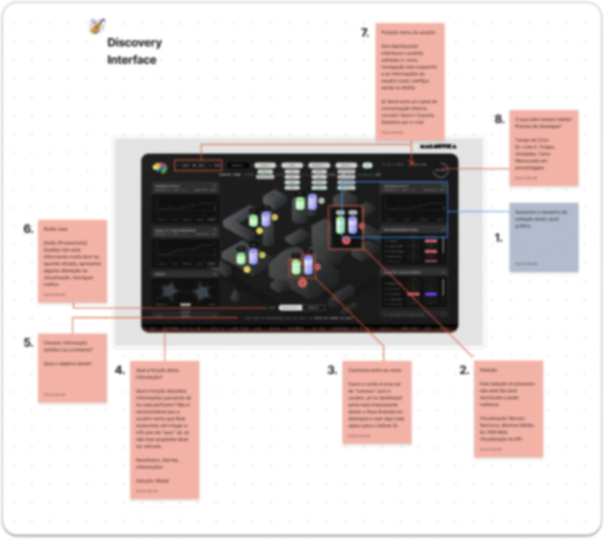

02 · Startup de IA (confidencial)
Ler a planta num relance
Da auditoria da interface legada ao dashboard de monitoramento operacional de uma usina de mineração.
- Papel
- UX/UI Designer
- Período
- 2021 — 2023
- Setor
- Mineração
- Entrega
- Auditoria e sistema de interface
O contexto
A empresa desenvolvia inteligência artificial atuando sobre maquinário industrial. O painel de monitoramento em tempo real era o ponto de contato mais importante entre o cliente e essa tecnologia: onde, ao vivo, se via o que a planta e a IA estavam fazendo.
Desktop first, depois tablet e mobile, com uma versão light para uso em campo, sob sol direto, e uma para o videowall da sala de controle.

Parte 1 · A auditoria
Usuário-alvo: o operador de sala de controle, em turno longo. Os achados principais:
- LoginA senha vinha antes do e-mail, quebrando o preenchimento automático.
- Contraste insuficienteCrítico para leitura em tablet sob sol direto.
- Status só por corFalha de acessibilidade para daltonismo.
- Sem estados de erro, carregamento ou vazioO operador não sabia se o dado era atual ou se tinha travado.
- Desligar a IA sem confirmaçãoRisco operacional alto para um clique acidental.
Parte 2 · O redesenho
Cada achado virou decisão de projeto. Quatro telas passaram a responder quatro perguntas do operador: onde está o problema (Circuits), o que mudar (Parameters), o que aconteceu (History) e o que reportar (Reports).
- A planta como fluxoA tela segue a ordem física da planta, da esquerda para a direita.
- Status nunca só por corÍcone e rótulo em cada estado, como "▲ AT LIMIT" e "✓ IN RANGE".
- A IA mostra o raciocínioToda sugestão vem com a justificativa e os dados de entrada. Desligar a IA agora pede confirmação.
- Prova pelo próprio dadoO histórico compara IA ligada e desligada, lado a lado.
- Três temas, um sistema de tokensLight para escritório, sunlight para campo e dark para o videowall.
O protótipo navegável
As nove telas e o fluxo completo, do login ao alarme resolvido, num protótipo que você pode usar. Os dados são fictícios e a interface está em inglês, como no produto.
- Siga o alarmeEntre com "Start shift". Na Home, o alarme leva ao circuito, ao parâmetro e ao ajuste que o resolve, e a Home volta limpa.
- Desligue a IAClique em "AI ACTIVE". A ação pede um motivo e um gesto de segurar, entrega 18 parâmetros ao operador e termina no modo manual.
- Troque de ambienteClaro, Sol e Escuro mudam todas as telas com o mesmo sistema de variáveis.
O sistema por baixo
Todas as telas usam o mesmo conjunto de 34 variáveis, em três ambientes de luz: Claro para o escritório, Sol para o tablet em campo e Escuro para o videowall da sala de controle.
Para o protótipo, auditei o contraste do próprio sistema. Três pares estavam abaixo do mínimo e foram corrigidos:
- Texto de apoio no ClaroEstava em 4,45:1. Escurecido para passar de 4,5:1.
- Botão no EscuroO texto branco sobre o roxo dava 3,9:1. O roxo ficou mais fundo e subiu para 4,8:1.
- Limite dos campos no ClaroEstava em 2,4:1. Subiu para 3,1:1, o mínimo para componentes de interface.
| Par | Claro | Sol | Escuro |
|---|---|---|---|
| Texto principal sobre o fundo (mín. 4,5:1) | 16,6:1 | 21,0:1 | 19,6:1 |
| Texto secundário sobre o fundo (mín. 4,5:1) | 5,7:1 | 11,8:1 | 10,1:1 |
| Texto de apoio sobre o fundo (mín. 4,5:1) | 5,1:1 | 8,1:1 | 6,3:1 |
| Texto do botão sobre o destaque (mín. 4,5:1) | 7,0:1 | 10,1:1 | 4,8:1 |
| Link sobre o fundo (mín. 4,5:1) | 6,3:1 | 8,4:1 | 8,3:1 |
| Status OK, texto sobre o seu fundo (mín. 4,5:1) | 6,4:1 | 8,4:1 | 10,9:1 |
| Status de erro, texto sobre o seu fundo (mín. 4,5:1) | 6,6:1 | 7,7:1 | 7,6:1 |
| Limite do campo sobre o fundo (mín. 3,0:1) | 3,1:1 | 8,1:1 | 19,6:1 |
O estudo completo
O case inteiro, da auditoria às telas finais, em 26 slides.
O resultado
Um sistema coerente: mesmos tokens, navegação e comutador de tema nas quatro telas. O painel deixou de exibir dado e passou a sustentar a decisão do operador.